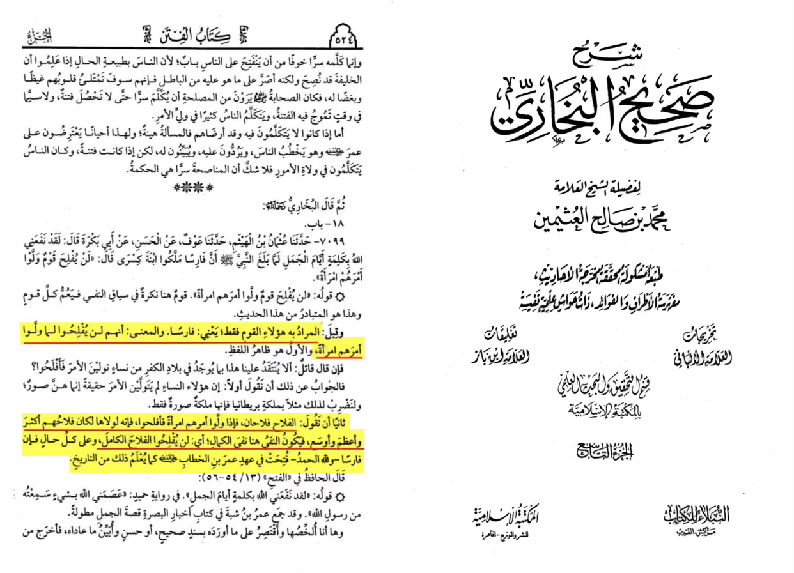
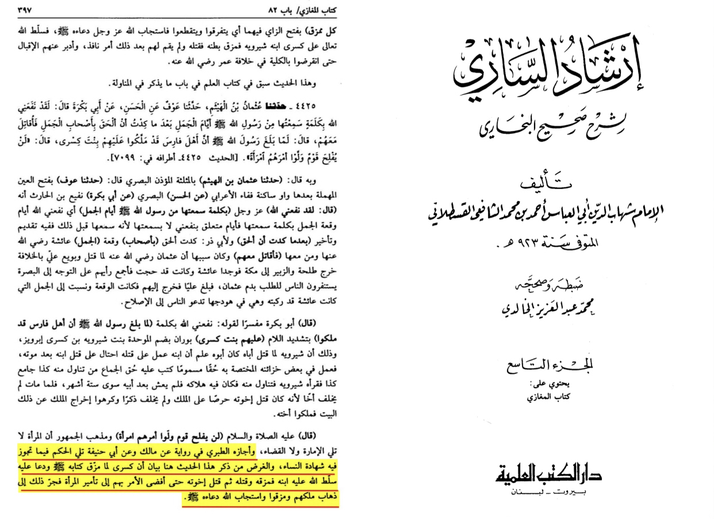
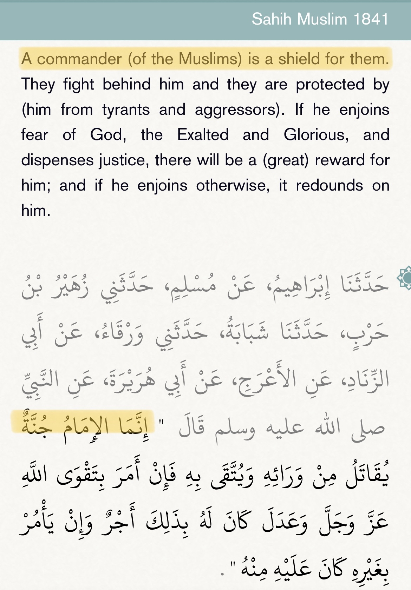

The hadith is a general statement it means that in general because women are more emotional than man it is hard for them to be good leaders now the Qūr’ānīc passage mentions Queen of Sheba as a good leader the hadith is also a prophecy against Caesar daughter that she wouldn’t succeed and it happened there is a scholar such as al-tabari allowed women as leaders , from a narration Abu hanifa and malik. Sources are from Sharhu Sahih al-bukhari ibn uthaymeen and irshad al-sari sharh sahih al-bukhari


Proof of women being more emotional:
https://online.ucpress.edu/collabra/article/5/1/54/113043/Rationality-is-Gendered
And here from the Hadith as it’s stated a leader of Muslims should protect other Muslims and citizens, and a woman won’t be able too especially in wars!

So here indication of the importance of the presence of the Caliph. And since the protection of Muslim life is obligatory, the Caliph is obligatory as well!
And please keep in mind the positions of leadership that the hadith refers to is those of the Imam (both of a nation and of the male/mixed congregational prayer), judges, and chief commanders of the Muslim army and those who carry out judicial punishments. However, even in regards the position of a judge, there were some scholars who permitted woman to be judges. [Fathul Bari, Tuhfa al Muhtaj, Fathul Mu’in, Ihya Ulum al Din].